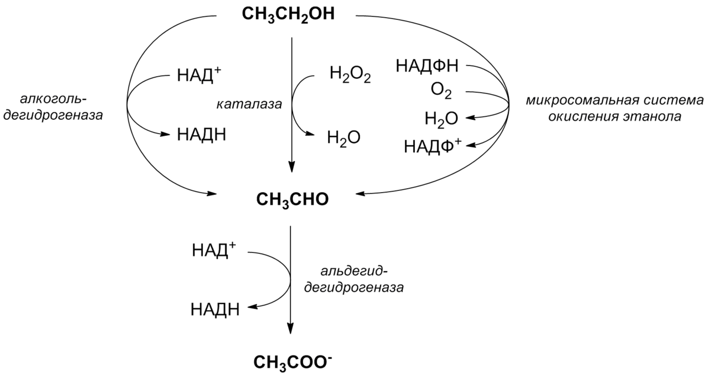

💪 Sức khỏe Nam giới
Nutrition — Alcohol, Testosterone & RecoveryDeep dive⏱ 8 phút đọc
Rượu Bia Tàn Phá Phục Hồi Thế Nào? Cơ Chế Ức Chế Hormone T & Đứt Gãy Giấc Ngủ REM
Chỉ 2–3 ly rượu bia vào buổi tối có thể phá hủy hoàn toàn công sức tập luyện của cả tuần. Dữ liệu từ hàng triệu đêm ngủ trên thiết bị đeo thông minh cho thấy rượu bia là thủ phạm số một khiến điểm Phục hồi (Recovery) rơi vào vùng đỏ báo động. Tìm hiểu cơ chế cồn ức chế trực tiếp enzyme sản xuất testosterone tại tinh hoàn và biến giấc ngủ ban đêm thành một cơn ác mộng chuyển hóa.
Chất cồn là độc tố chuyển hóa ưu tiên đào thải. Nó làm sụt giảm 20%–40% testosterone sau các buổi nhậu, ức chế quá trình tổng hợp cơ bắp và cắt cụt giấc ngủ REM. Nếu uống rượu, hãy cách giờ đi ngủ ít nhất 4 tiếng và bù nước kèm điện giải.
Cơn Ác Mộng Sinh Hóa: Tinh Hoàn Bị Tấn Công Bởi Acetaldehyde
Nhiều người lầm tưởng rượu bia chỉ ảnh hưởng đến gan và dạ dày. Tuy nhiên, trên phương diện nội tiết nam giới, phân tử cồn (Ethanol) và chất chuyển hóa độc hại của nó là Acetaldehyde tấn công trực tiếp vào trục hormone theo 3 gọng kìm tàn khốc:
1. Độc Tính Trực Tiếp Lên Tế Bào Leydig: Cồn thẩm thấu qua hàng rào máu - tinh hoàn, làm rối loạn enzyme 3β-HSD và 17β-HSD, khiến các tế bào Leydig tạm thời mất khả năng chuyển đổi cholesterol thành Testosterone.
2. Kích Thích Tuyến Thượng Thận Tiết Cortisol: Cồn kích hoạt phản ứng stress sinh học cấp tính, đẩy nồng độ Cortisol lên cao. Cortisol và Testosterone có tính đối nghịch: Cortisol cao sẽ khóa chặt các thụ thể androgen tại cơ bắp.
3. Ức Chế Tuyến Yên Tiết Hormone LH: Cồn làm gián đoạn các xung giải phóng hormone tạo hoàng thể (LH) từ não bộ xuống cơ quan sinh dục.
Nghiên cứu lâm sàng (Vingren et al., Sports Medicine) cho thấy việc tiêu thụ lượng cồn tương đương 1.5g/kg thể trọng (khoảng 4–5 ly bia) sau tập luyện làm sụt giảm nồng độ Testosterone từ 20% đến 40% kéo dài suốt 24 giờ tiếp theo.

📊 Sơ đồ y khoa: Con đường chuyển hóa Ethanol qua gan: Quá trình phân giải rượu sinh ra các gốc oxy hóa gây ức chế cấp tính tế bào Leydig sản xuất testosterone. Nguồn sơ đồ: Wikimedia Commons ↗
Ảo Tưởng "Uống Rượu Dễ Ngủ": Sự Đứt Gãy Của Giấc Ngủ REM
Nhiều người viện cớ uống 1–2 ly rượu để "dễ ngủ". Đúng là cồn tăng cường hoạt tính của chất dẫn truyền ức chế GABA, tạo cảm giác thư giãn và rút ngắn thời gian chìm vào giấc ngủ (Sleep Latency). Nhưng cái giá phải trả cho nửa sau của đêm là vô cùng đắt đỏ:
- Cắt Ngắn Giấc Ngủ REM Tới 50%: Khi gan chuyển hóa hết cồn vào giữa đêm, cơ thể rơi vào hiệu ứng dội ngược kích thích thần kinh (Sympathetic Rebound). Bạn sẽ thức giấc liên tục, đổ mồ hôi và tim đập thình thịch.
- Tăng Nhịp Tim Nghỉ Ngơi (RHR): Dữ liệu WHOOP và Oura ghi nhận RHR ban đêm tăng trung bình +8 đến +15 nhịp/phút. Trái tim của bạn phải đập thêm hàng nghìn nhịp vô ích trong lúc đáng lẽ phải được nghỉ ngơi.
- Biến Thiên Nhịp Tim (HRV) Sụp Đổ: HRV sụt giảm sâu từ 30% đến 60%, báo hiệu hệ thần kinh phó giao cảm bị tê liệt hoàn toàn.
So Sánh Phục Hồi Thần Kinh - Thể Lực: Có Cồn vs. Không Cồn
Chỉ Số Sinh Học Thiết Bị Đeo
Đêm Ngủ Không Cồn (Healthy Baseline)
Đêm Ngủ Sau Khi Tiêu Thụ 2–3 Ly Cồn
Ý Nghĩa Y Khoa Thực Tế
Nhịp tim nghỉ ngơi ban đêm (RHR)
48 – 55 bpm (Ổn định, hạ sâu nhất lúc 03:00 sáng)
60 – 72 bpm (Duy trì cao suốt đêm)
Cơ thể không bước vào trạng thái hồi phục tim mạch; gánh nặng chuyển hóa gan.
Biến thiên nhịp tim (HRV RMSSD)
65 – 90 ms (Vùng xanh phục hồi tối ưu)
22 – 38 ms (Rơi sâu vào vùng đỏ)
Dây thần kinh phế vị bị ức chế; hệ thần kinh tự chủ bị kiệt quệ.
Thời lượng ngủ REM & Sâu
3.5 – 4.5 giờ (Chiếm 45%–50% tổng giấc ngủ)
Dưới 1.5 giờ (Chủ yếu là ngủ chập chờn nông)
Mất cơ hội củng cố trí nhớ, cân bằng cảm xúc và phục hồi thụ thể thần kinh.
Tổng hợp Protein Cơ Bắp (MPS)
100% tiềm năng hồi phục vi sợi cơ sau tập
Giảm 37% (kể cả khi đã nạp đủ whey protein)
Công sức tập tạ bị lãng phí do cồn ức chế trực tiếp con đường truyền tín hiệu mTORC1.
Giao Thức 4 Bước Giảm Thiểu Tác Hại Của Rượu Bia
Quy Tắc "Cửa Sổ 4 Tiếng": Kết thúc ly rượu cuối cùng tối thiểu 4 giờ trước khi lên giường. Khoảng thời gian này cho phép gan xử lý phần lớn lượng ethanol trong máu trước khi các chu kỳ ngủ sâu bắt đầu.
Tỷ Lệ 1:1 Với Nước Lọc: Cứ mỗi ly rượu hoặc bia nạp vào, hãy uống ngay một ly nước lọc 250ml để ngăn ngừa tình trạng mất nước nội bào và giữ thể tích huyết tương ổn định.
Bổ Sung Chất Điện Giải & Vitamin Nhóm B: Uống 1 gói điện giải (Natri, Kali, Magie) và 1 viên B-Complex trước khi ngủ. Rượu là chất lợi tiểu làm cạn kiệt vitamin B1 (Thiamine) và Magie—hai vi chất cần thiết cho chức năng thần kinh.
Không Tập Nặng Ngày Hôm Sau Khi HRV Vùng Đỏ: Nếu thiết bị đeo báo điểm Recovery dưới 33% sau đêm uống rượu, hãy hủy buổi tập gym nặng hoặc chạy nước rút. Chuyển sang đi bộ nhẹ nhàng (Active Recovery) để tránh nguy cơ rách cơ và chấn thương gân khớp.
Tài Liệu Tham Khảo & Nguồn Y Khoa
Barnes, M. J. (2014).Alcohol: a nutrient and a poison: the effects of alcohol on exercise performance and recovery. Sports Medicine, 44(7), 909–919. Tạp chí Sports Medicine (PMID: 24533518) ↗
Parr, E. B., Camera, D. M., Areta, J. L., et al. (2014).Alcohol ingestion impairs maximal post-exercise rates of myofibrillar protein synthesis. PLoS ONE, 9(2), e88384. Tạp chí PLOS ONE (PMID: 24533148) ↗
Ebrahim, I. O., Shapiro, C. M., Williams, A. J., & Fenwick, P. B. (2013).Alcohol and sleep I: effects on normal sleep. Alcoholism: Clinical and Experimental Research, 37(4), 539–549. Tạp chí Sleep (PMID: 23347102) ↗
Maneesh, M., Dutta, S., Chakrabarti, A., & Vasudevan, D. M. (2006).Alcohol abuse-duration dependent decrease in plasma testosterone and antioxidants in males. Indian Journal of Experimental Biology, 44(4), 291–296. Báo Cáo Nghiên Cứu Gốc (NCBI PubMed: 16629372) ↗
📚
Nguồn Tham Khảo Y Khoa & Nghiên Cứu Gốc
Bài viết này được tổng hợp và kiểm chứng từ các nghiên cứu y sinh học, hướng dẫn lâm sàng và tài liệu khoa học thiết bị đeo của Alcoholism: Clinical and Experimental Research & Sports Medicine.
Just two to three alcoholic drinks in the evening can silently derail an entire week of disciplined training. Biometric analytics across millions of wearable user nights consistently single out alcohol as the primary trigger for catastrophic 'Red Recovery' scores. Explore how ethanol directly blocks testicular testosterone synthesis while fragmenting essential restorative REM sleep.
Alcohol is a priority metabolic toxin. It triggers acute 20%–40% reductions in testosterone synthesis, impairs muscle protein synthesis by up to 37%, and shatters REM sleep architecture. If consuming alcohol, finish at least 4 hours before bedtime and hydrate aggressively.
Biochemical Warfare: Testicular Attack by Acetaldehyde
Alcohol is frequently mischaracterized as merely a liver and gastrointestinal burden. In male endocrinology, ethanol and its toxic metabolite acetaldehyde assault the gonadal axis across three brutal fronts:
1. Direct Leydig Cell Toxicity: Ethanol freely crosses the blood-testis barrier, uncoupling 3β-HSD and 17β-HSD enzymes, temporarily paralyzing Leydig cells from converting cholesterol into testosterone.
2. Adrenocortical Cortisol Activation: Alcohol triggers an acute biological stress response, spiking systemic cortisol. Cortisol and testosterone are competitive antagonists: elevated cortisol locks androgen receptors in skeletal muscle.
3. Pituitary LH Suppression: Ethanol disrupts pulsatile luteinizing hormone (LH) discharge from anterior pituitary gonadotropes.
Clinical trials (Vingren et al., Sports Medicine) show that consuming 1.5g alcohol/kg (~4–5 beers) post-workout slashes serum testosterone by 20% to 40% over the subsequent 24 hours.
Many justify alcohol as a "nightcap" to assist sleep onset. While ethanol potentiates inhibitory GABA to reduce sleep latency, the metabolic tax paid during the second half of the night is devastating:
- Cuts REM Sleep by up to 50%: As the liver clears alcohol midway through the night, the brain suffers acute sympathetic rebound. Micro-awakenings, night sweats, and tachycardia shatter restorative sleep.
- Elevates Overnight Resting Heart Rate (RHR): Wearable analytics confirm overnight RHR surges by +8 to +15 bpm, forcing the heart to beat thousands of extra times without true rest.
- Heart Rate Variability (HRV) Collapse: RMSSD plunges by 30% to 60%, reflecting severe autonomic exhaustion.
Biological Recovery Scorecard: Sober Sleep vs. Alcohol Sleep
Wearable Biometric Signature
Sober Night Baseline
Night Following 2–3 Alcoholic Drinks
Clinical Significance
Overnight Resting Heart Rate (RHR)
48 – 55 bpm (Nadir reached at 03:00)
60 – 72 bpm (Elevated all night)
Cardiovascular system denied restorative rest; intense hepatic stress.
Heart Rate Variability (HRV RMSSD)
65 – 90 ms (Optimal green recovery)
22 – 38 ms (Plummets into deep red)
Vagus nerve silenced; autonomic nervous system locked in fight-or-flight.
Restorative REM & Deep Sleep
3.5 – 4.5 hours (45%–50% of total)
Under 1.5 hours (Fragmented light sleep)
Neurochemical rebalancing, memory consolidation, and GH release aborted.
Muscle Protein Synthesis (MPS)
100% post-exercise recovery capacity
Reduced by 37% (even with protein)
Ethanol directly inhibits mTORC1 phosphorylation in skeletal muscle.
4-Step Harm Reduction Protocol for Alcohol Consumption
Enforce the 4-Hour Curfew: Finish your final drink at least 4 hours prior to bedtime to allow hepatic clearance before deep sleep cycles begin.
Execute 1:1 Hydration: Match every alcoholic drink with an equal 250 mL glass of water to counter cellular dehydration and maintain plasma volume.
Supplement Electrolytes and B-Complex: Take an electrolyte packet (Sodium, Potassium, Magnesium) and B-Complex pre-bed; alcohol depletes thiamine and magnesium critical for neural stability.
Reschedule Heavy Strain When in Red Recovery: If your wearable displays a Red Recovery Score (<33%) following drinking, cancel heavy lifting or sprints. Shift to light Zone 1 active recovery to avoid soft tissue injury.
Clinical References & Scientific Sources
Barnes, M. J. (2014).Alcohol: a nutrient and a poison: effects on exercise performance and recovery. Sports Medicine, 44(7), 909–919. View on PubMed ↗
Parr, E. B., Camera, D. M., et al. (2014).Alcohol ingestion impairs maximal post-exercise rates of myofibrillar protein synthesis. PLoS ONE, 9(2), e88384. View on PLOS ONE ↗
Ebrahim, I. O., et al. (2013).Alcohol and sleep I: effects on normal sleep. Alcoholism: Clinical and Experimental Research, 37(4), 539–549. View on PubMed ↗
Maneesh, M., et al. (2006).Alcohol abuse-duration dependent decrease in plasma testosterone and antioxidants in males. Indian J Exp Biol. View on PubMed ↗
📚
Clinical Reference & Scientific Backing
This article is synthesized from peer-reviewed medical literature, clinical guidelines, and wearable biometric validation studies from Alcoholism: Clinical and Experimental Research & Sports Medicine.